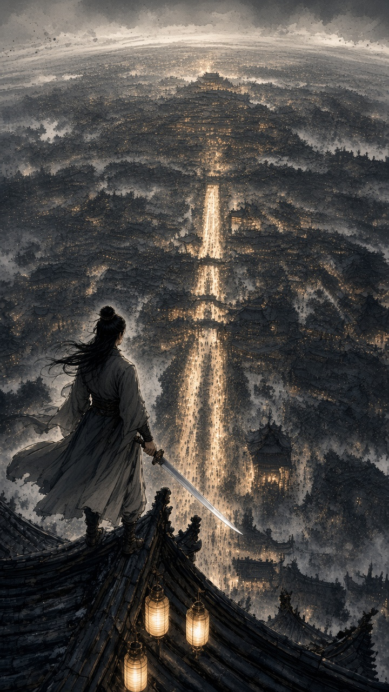
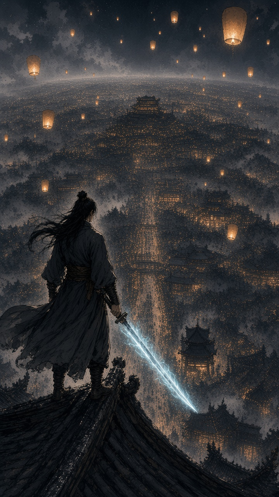
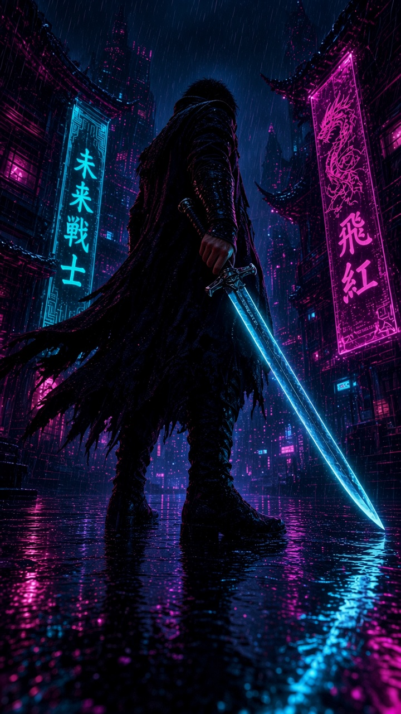

案例 01 · 仙侠不夜城

8.39

6 轮 · next R7 · best R6 · judge: agent_look
8.48
6 轮 · next R7 · best R6 · judge: agent_look
8.51

6 轮 · next R7 · best R5 · judge: agent_look
8.57
6 轮 · next R7 · best R5 · judge: agent_look
8.58

5 轮 · next R6 · best R5 · judge: agent_look